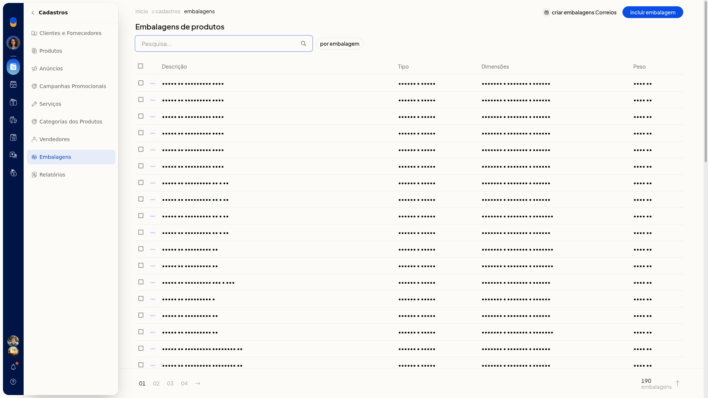

Criar embalagens dos Correios
No ERP da Olist, você inicia a criação das embalagens dos Correios a partir da lista de embalagens de produtos. O botão Criar embalagens Correios fica nessa lista.
Instruções
-
Acesse Cadastros > Embalagens.

-
Clique em Criar embalagens Correios.